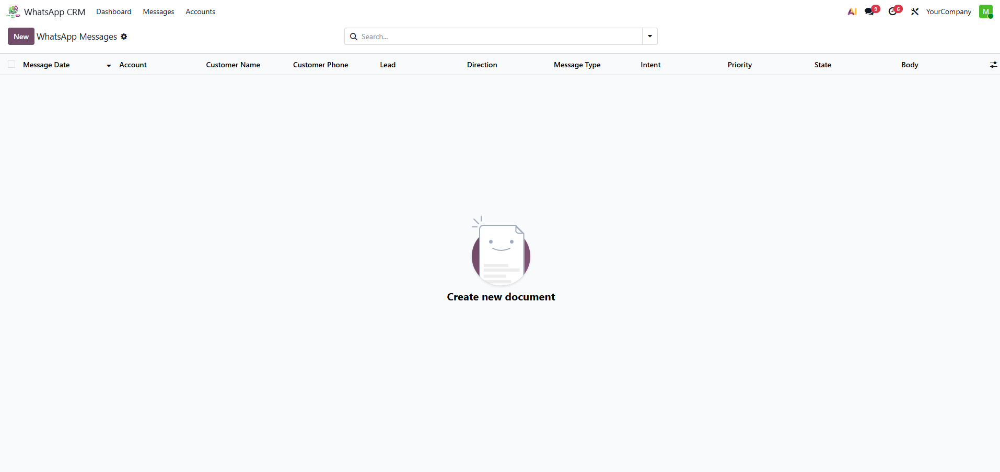
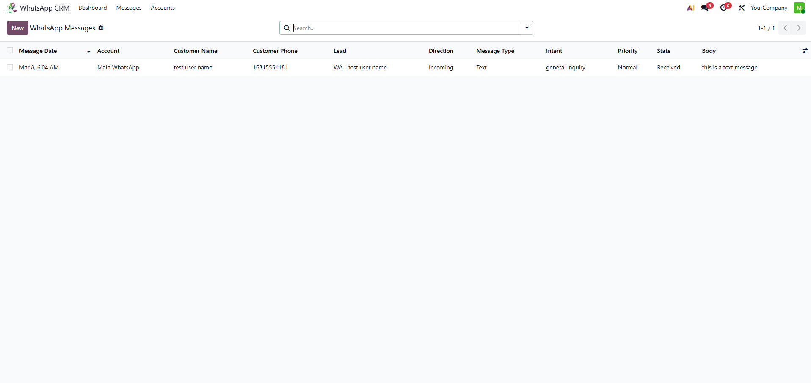
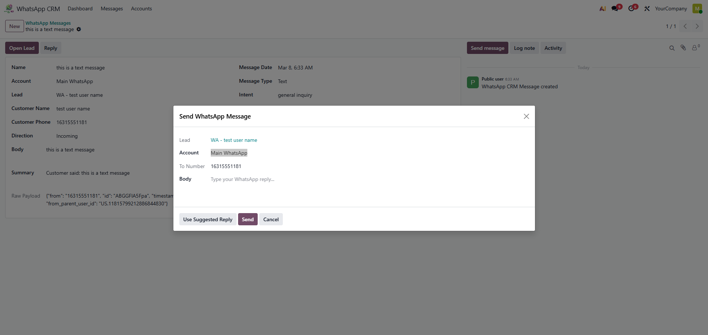

WhatsApp CRM Pro
Convert WhatsApp conversations into CRM workflow inside Odoo.
- Conversation timeline inside CRM leads
- Global auto-create lead toggle in Settings
- Read / replied message status analytics
- Reply from CRM leads and message records
- Multi-account Meta Cloud API support
Screenshots


